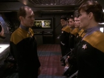
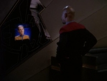

|

Publicado
originalmente
em 2 de maio de 2005

Paraso questionvel
Uma
viso pessoal do arco Maqui, na qual o autor faz uma anlise dos elementos presentes
nos episdios da srie

|
-
isto, ento, o fim dos Maquis? -- Dax e Sisko, "Blaze of Glory". Com
"Blaze of Glory", chegamos aos atos finais do arco Maqui. Dentro
do contexto onde existe o universo de Jornada nas Estrelas, o que teria
sido do movimento deste ponto em diante? Como podemos ver nesta quinta temporada
de Deep Space Nine, quando Cardssia se juntou ao Dominion, uma das primeiras
coisas que eles fizeram foi varrer do mapa toda a presena Maqui nos territrios
que compunham a at ento Zona Desmilitarizada, tal qual Dukat afirmou que faria.  Todos
estes aspectos que debati aqui neste artigo teriam sido intencionalmente desenvolvidos
pelas diversas equipes criativas que trabalharam com tramas Maqui? Difcil dizer,
e muito provavelmente no. Contudo, isto est longe de ser algo indesejvel, muito
pelo contrrio. Sem dvida alguma que houve uma clara inteno de mostrar os federados
por ngulos mais cinzentos, de maneira a demonstrar que mesmo os nobres federados
so capazes de atos duvidosos. S que como podemos ver, no foi apenas isto que
foi possvel se retirar deste excelente arco que agora termina. O arco Maqui teve
tantos elementos interessantes e tantos aspectos ricos em possibilidades, que
foi possvel se desenhar um contexto onde realmente todos os participantes poderiam
ter aspectos sombrios e motivaes desprezveis, incluindo os maquis; e todos
os participantes poderiam ter justificveis e boas posies, incluindo os cardassianos. O
resultado foi um claro "no-win scenario", especialmente para a Federao,
ou seja, um caso onde no importa qual seja o resultado, qual seja a deciso tomada,
algum tem que ceder e algum tem que ficar desgostoso, e no interessa o quo
"evoludos" eles fossem, eles no conseguem encontrar maneira de satisfazer
a todos, de encontrar a soluo pacfica ideal. Resta se debater a respeito de
qual sada a menos pior, e exatamente isto uma das coisas que ilustram bem
todo o potencial que o arco Maqui teve, e o qual infelizmente no foi desenvolvido
a este total potencial.  Contudo,
eu no compartilho desta opinio sobre o arco da Guerra Dominion. Enquanto conflito
poltico, econmico, social e militar, o arco da Guerra Dominion foi muito mal
desenvolvido, e acredito foi uma enorme perda de tempo que desviou Deep Space
Nine de caminhos que teriam sido ainda mais proveitosos para a srie, onde
ela teria tido ainda mais qualidade. Embora a quinta, sexta e stimas temporadas
de Deep Space Nine tenham tido inmeros excelentes episdios, muitos destes
ligados diretamente bem ao arco Dominion, eu considero que isto se deu quase que
exclusivamente aos pontos fortes de Deep Space Nine o desenvolvimento
dos personagens, e as maneiras pelas quais eles interagem entre si frente as situaes
que tem que conviverem. Embora a guerra em si os tenha colocado nas situaes
que enfrentaram, ela em si enquanto arco de trama no foi boa, e no aproveitou
Deep Space Nine a todo o seu potencial, pois estes pontos fortes da srie
j estavam cristalizados muito antes do arco Dominion tomar para si todo o oxignio
do ambiente. Pois
como sempre tenho dito, Deep Space Nine foi uma srie cuja qualidade foi
bem mais constante do que se costuma considerar. Sim, a srie teve um aumento
na sua qualidade das primeiras temporadas para as ltimas, mas este crescimento
foi bem mais suave e gradativo do que se costuma acreditar. No considero suas
primeiras temporadas de modo algum fracas, especialmente a segunda e terceira,
e as temporadas seguintes, boas que so, tambm no so o pice de qualidade mxima
que o fandom costuma considerar. O arco Maqui e seus elementos relacionados colaboram
muito nesta minha viso geral da qualidade de Deep Space Nine, uma vez
que a maioria de seus elementos esto concentrados nas primeiras temporadas da
srie. Uma situao onde o arco maqui fosse desenvolvido a todo o seu potencial, poderia nos ter oferecido um timo e constante campo para forte desenvolvimento de personagem, teria tido elementos de trama com forte peso social e poltico, tudo isto elementos pelos quais Deep Space Nine conhecida e aclamada, e tambm teramos tido todas a consideraes sobre explorao da fronteira final pela qual Jornada nas Estrelas em geral aclamada. Mas, ao invs disto, tivemos a Guerra Dominion. Bem, j que o que resta, ento vamos a ela. |